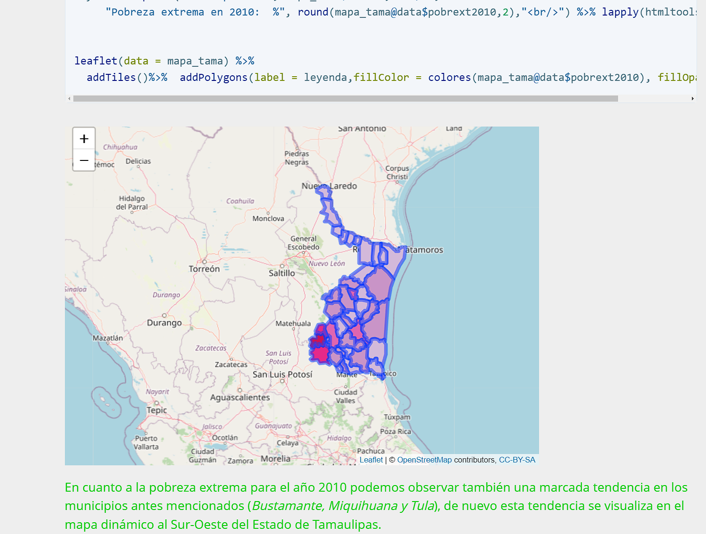
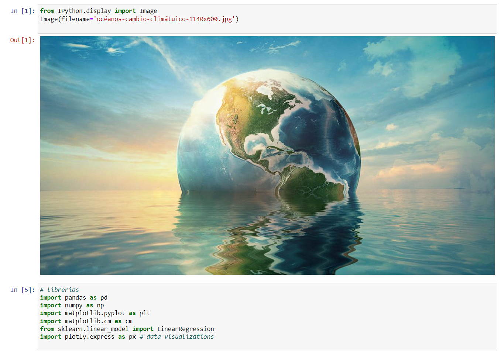
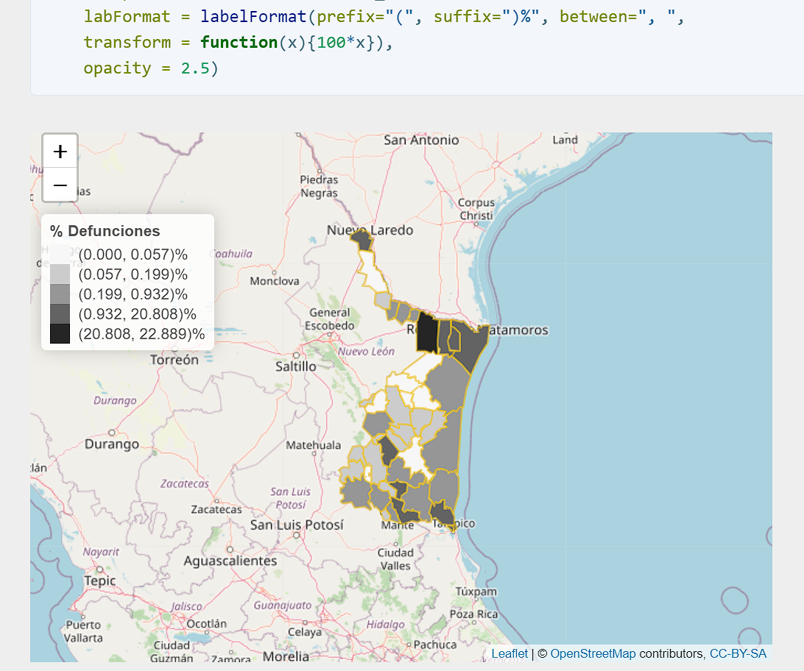
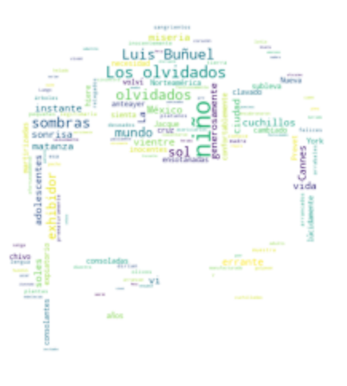
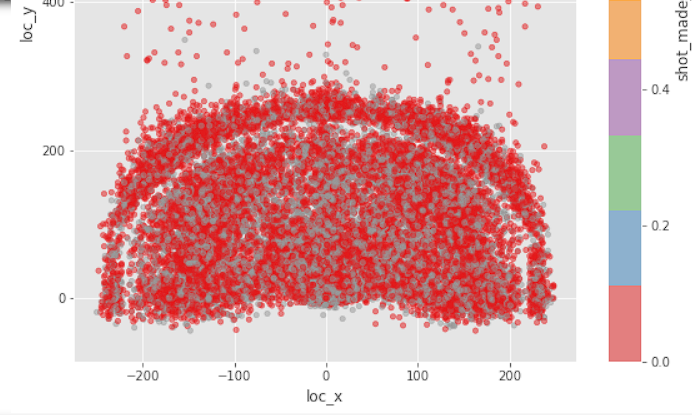

Using the latest information on the multidimensional measurement of poverty carried out by CONEVAL at the state level (2020)
and utilizing the database provided by INEGI, in the geo-statistical framework product, September 2019, from where we extract the information for our maps.


Problem Description:
The increase in temperature and sea level has numerous adverse effects, one of which is the discovery that a 1-degree Celsius increase in sea temperature can lead to coral death. Climate models indicate that the sea surface temperature is projected to increase between 1 and 3ºC, while sea levels are expected to rise between 0.18 and 0.79 meters. Regional weather patterns are likely to change, leading to increased severity and frequency of storms, particularly cyclones. Additionally, oceanic circulation patterns are expected to alter, and the pH is expected to decrease due to CO2 absorption. (UN, Status of Coral Reefs of the World: 2020).

The project focuses on analyzing the spatial distribution of mortality rates by municipality in the Tamaulipas State. The map visually displays the percentage of deaths, with darker colors representing higher mortality rates. It is observed that Reynosa municipality has the highest concentration of deaths, which is also confirmed by the graph in Exercise 2.
Note: To enhance readability, most libraries are included with the "include = F" parameter. Some of the libraries used include "dygraphs," "plyr," "xts," "kableExtra," "tidyverse," "lubridate," "dplyr," "sf," "ggplot2," "readxl," "stringr," "RColorBrewer," "scales," "leaflet," "htmltools," "plotly," and "tidyr." Furthermore, comments related to the code are kept within "Chunks" to simplify the reading process.
Database and Filtering for Tamaulipas State:
The project involves reading a COVID-19 database in CSV format, downloaded from the official website of the Mexican Federal Ministry of Health.

The project involves selecting a collection of texts, such as news articles, reviews, tweets, etc. The data is loaded using pandas, and three different word clouds are generated with various configurations. These configurations can include different stopwords, scales, sizes, and other parameters. The last word cloud is created using a poem from a Luis Buñuel movie:"Los olvidados" in background his face.
The project aims to analyze the catalog content of movies and TV series across various streaming platforms such as Netflix, HBO, Disney+, and more. Several questions are addressed, including determining whether there are more movies or series in the catalog, identifying the years with the highest content, determining the genre with the most content, finding the unique and non-mixed genres, counting the number of elements in each unique category, examining the distribution of content across platforms, comparing the number of movies and series on each platform, determining the age distribution of the total content, breaking down the age distribution by platform, and creating graphs to showcase the most popular genres on each platform.

The project involves building a machine learning model in Python using a Kobe Bryant basketball database. The project utilizes various packages and libraries such as mpl_toolkits, matplotlib, sklearn, and more.
The following tasks are performed in the project:
• Importing necessary packages and libraries, including mpl_toolkits, matplotlib, sklearn, etc.
• Preprocessing the data using techniques such as data scaling and splitting into training and testing sets.
• Implementing machine learning algorithms, such as linear regression, decision trees, random forest, and support vector machines.
• Evaluating the model's performance using metrics like mean squared error, R-squared score, accuracy score, f1 score, and confusion matrix.
• Performing model optimization using techniques like grid search and cross-validation.
• Utilizing clustering algorithms, such as KMeans, for further analysis.
.